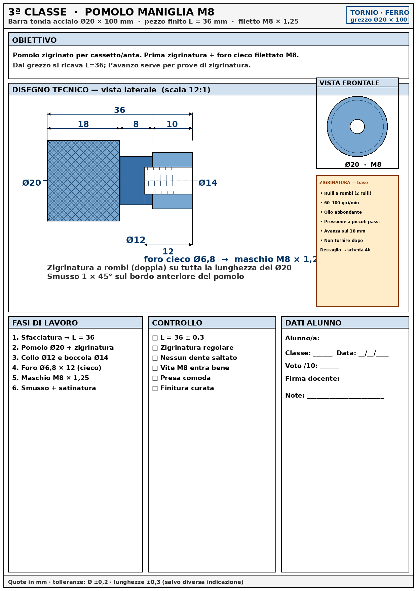
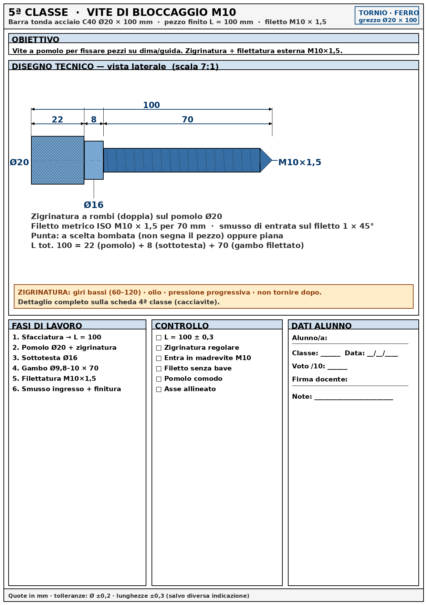
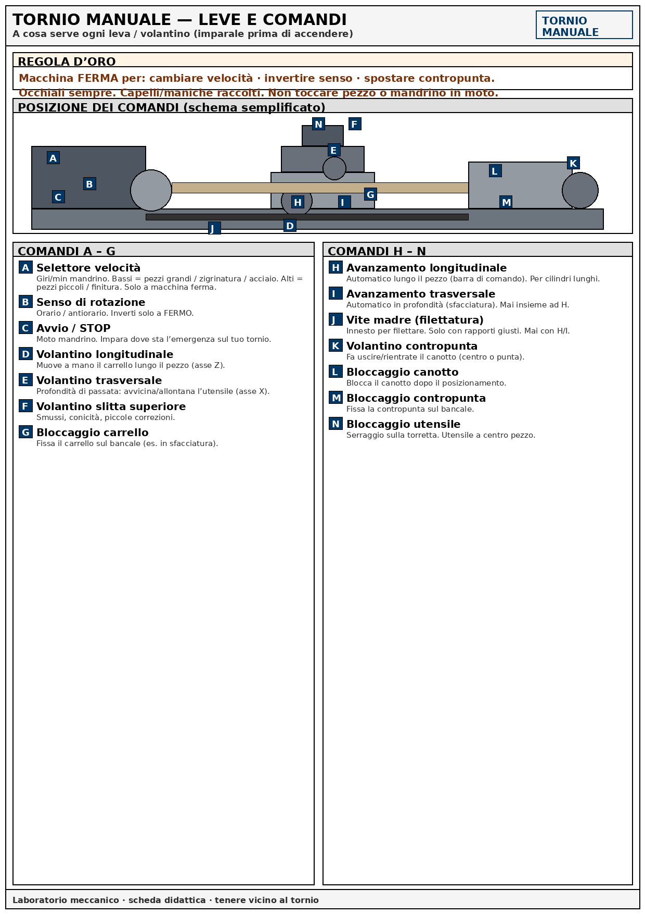

2ª — ApribottiglieTornitura + lima per l’uncino Scarica PNG

3ª — Pomolo maniglia M8Prima zigrinatura + filetto Scarica PNG4ª — Cacciavite a taglioZigrinatura + gola + lama Scarica PNG

5ª — Vite di bloccaggio M10Zigrinatura + filetto esterno Scarica PNGTornio — le partiSchema laterale preciso + legenda 1–12 Scarica PNG

Tornio — leve e comandiA–N con posizione sullo schema Scarica PNGTornio — sequenza e sicurezzaOrdine di lavoro + cose da non fare Scarica PNGZigrinatura — come si faSchema rulli, parametri, sequenza 1–7 Scarica PNG
Su iPhone: apri l’immagine a schermo intero → tieni premuto → “Salva immagine”.